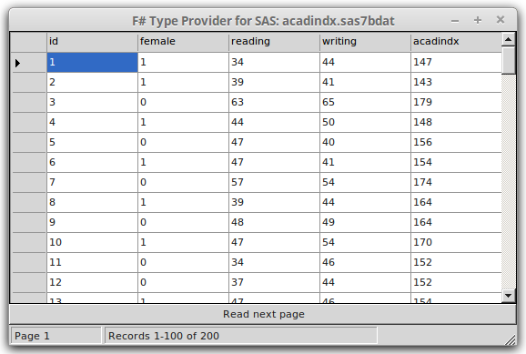

F# Data Toolbox: SAS dataset type provider
The SAS dataset (sas7bdat) type provider allows exploratory programming with SAS files and provides native access to SAS datasets. No SAS software or OLE DB providers required.
Opening a SAS dataset file
You can use FSharp.Data.Toolbox in dotnet interactive notebooks in Visual Studio Code or Jupyter, or in F# scripts (.fsx files), by referencing the package as follows:
// Use one of the following two lines
#r "nuget: FSharp.Data.Toolbox.Sas" // Use the latest version
#r "nuget: FSharp.Data.Toolbox.Sas,0.20.2" // Use a specific version
#r "nuget: FSharp.Data"
open FSharp.Data.Toolbox.Sas
open FSharp.Data
Open SAS dataset by passing file name to SasFileTypeProvider type
The library gives you a parameterized type provider SasFileTypeProvider that
takes the SAS data file as an argument:
[<Literal>]
let sasPath = @"../tests/FSharp.Data.Toolbox.Sas.Tests/files/acadindx.sas7bdat"
let sasFile = new SasFileTypeProvider<sasPath>()
After openning the dataset, you can call methods to access SAS metadata and the data itself.
Accessing metadata
The following examples show how to access meta-information about SAS dataset.
let datasetName = sasFile.Header.DataSet.Trim()
let architecture = sasFile.Header.Bits
let rowCount = sasFile.MetaData.RowCount
// Get a list of dataset columns
let cols = sasFile.MetaData.Columns
printfn "Number of columns: %d" (cols |> Seq.length)
printfn "Names of columns: %s" (cols |> Seq.map (fun col -> col.Name) |> String.concat ", ")
Accessing data in a strongly-typed fashion
Good for exploratory programming. IntelliSense access to column names.
// read sixth row of data
let row = sasFile.Observations |> Seq.skip 5 |> Seq.head
printfn "Column 'id' value: %A" row.id
printfn "Column 'reading' value: %A" row.reading
The following examples show a couple of calculations that you can write using the standard F# library functions over the data obtained using the type provider:
// sum first 10 'reading' variable values
sasFile.Observations
|> Seq.take 10
|> Seq.sumBy ( fun obs -> obs.reading )
// calculate mean
let readingMean =
sasFile.Observations
|> Seq.averageBy (fun obs -> obs.reading )
// standard deviation
let readingStdDev =
let sum =
sasFile.Observations
|> Seq.map (fun obs -> (obs.reading - readingMean) ** 2.0)
|> Seq.sum
sqrt (sum / Seq.length sasFile.Observations)
// min
sasFile.Observations
|> Seq.map (fun obs -> obs.reading)
|> Seq.min
// ...and max
sasFile.Observations
|> Seq.map (fun obs -> obs.reading)
|> Seq.max
Accessing data with F# Query Expressions
'query { expression } ' syntax can be used to access SAS dataset
// multiply 'reading' by 'writing' and sum
query {
for obs in sasFile.Observations do
sumBy (obs.reading * obs.writing)
}
// ..is equivalent to:
sasFile.Observations
|> Seq.map (fun obs -> obs.reading * obs.writing)
|> Seq.sum
You can use other constructs available inside F# query expressions to filter the data or perform aggregations:
// filter data
query {
for obs in sasFile.Observations do
where (obs.female = Number 1. )
select obs.female
}
// aggregate
query {
for obs in sasFile.Observations do
where (obs.female <> Number 1. )
count
}
query {
for obs in sasFile.Observations do
where (obs.female <> Number 1. )
sumBy obs.writing
}
The following is a slightly more interesting example which joins data from two data sets:
// join two datasets
[<Literal>]
let crimePath = @"../tests/FSharp.Data.Toolbox.Sas.Tests/files/crime.sas7bdat"
let crimeFile = new SasFileTypeProvider<crimePath>()
[<Literal>]
let statesPath = @"../tests/FSharp.Data.Toolbox.Sas.Tests/files/states.sas7bdat"
let statesFile = new SasFileTypeProvider<statesPath>()
let trim x =
let (Character s) = x
s.Trim()
query {
for crime in crimeFile.Observations do
join state in statesFile.Observations
on (trim crime.State = trim state.State)
select (crime.murder_rate, state.State)
}
Accessing data in a generic way
Can be used for bulk data processing or converting SAS files to text files.
let valueToText value =
match value with
| Number n -> n.ToString()
| Character s -> s.Trim()
| Time t -> t.ToString("HH:mm:ss")
| Date d -> d.ToString("yyyy-MM-dd")
| DateAndTime dt -> dt.ToString("O")
| Empty -> ""
sasFile.Rows
|> Seq.take 100
|> Seq.iter (fun row ->
let line =
row
|> Seq.map valueToText
|> String.concat ","
printfn "%s" line )
Displaying data in a grid
We can display the data in a grid.
open System.Windows.Forms
// Create a window with a grid
let frm =
new Form(TopMost = true, Visible = true,
Text = "F# Type Provider for SAS: " + System.IO.Path.GetFileName sasFile.FileName,
Width = 600, Height = 600)
let grid = new DataGridView(Dock = DockStyle.Fill, ReadOnly = true)
let btn = new Button(Text = "Read next page", Dock = DockStyle.Bottom)
let status = new StatusBar(ShowPanels = true, Dock = DockStyle.Bottom)
let pageStatus = new StatusBarPanel(Text = "Page")
let recordStatus = new StatusBarPanel(Text = "Records", Width = 300 )
status.Panels.Add pageStatus
status.Panels.Add recordStatus
frm.Controls.Add grid
frm.Controls.Add btn
frm.Controls.Add status
let pageSize = 100
let read page =
sasFile.Observations
|> Seq.skip (pageSize*(page - 1))
|> Seq.truncate pageSize
// Add columns
let columns = sasFile.MetaData.Columns
grid.ColumnCount <- columns.Length
for i = 0 to columns.Length - 1 do
grid.Columns.[i].HeaderText <- columns.[i].Name
// Display data
let show page =
let data = read page
grid.Rows.Clear()
pageStatus.Text <- sprintf "Page %i" page
recordStatus.Text <- sprintf "Records %i-%i of %i"
<| (page-1)*pageSize + 1
<| min (page*pageSize) sasFile.MetaData.RowCount
<| sasFile.MetaData.RowCount
for row in data do
let values = [| for value in row -> valueToText value |]
let gridRow = new DataGridViewRow()
gridRow.CreateCells grid
for col = 0 to columns.Length - 1 do
gridRow.Cells.[col].Value <- values.[col]
grid.Rows.Add gridRow |> ignore
let mutable page = 1
btn.Click.Add(fun _ ->
if page*pageSize < sasFile.MetaData.RowCount then
page <- page + 1
else
page <- 1
show page
)
show page

namespace FSharp
--------------------
namespace Microsoft.FSharp
namespace FSharp.Data
--------------------
namespace Microsoft.FSharp.Data
type LiteralAttribute = inherit Attribute new : unit -> LiteralAttribute
<summary>Adding this attribute to a value causes it to be compiled as a CLI constant literal.</summary>
<category>Attributes</category>
--------------------
new : unit -> LiteralAttribute
example fast binder url: https://mybinder.org/v2/gh/fsprojects/fsharp.formatting/master?urlpath=git-pull?repo=https:/nhirschey.github.com/teaching/gh-pages/fundamentals.ipynb
<summary>Print to <c>stdout</c> using the given format, and add a newline.</summary>
<param name="format">The formatter.</param>
<returns>The formatted result.</returns>
<summary>Contains operations for working with values of type <see cref="T:Microsoft.FSharp.Collections.seq`1" />.</summary>
<summary>Returns the length of the sequence</summary>
<param name="source">The input sequence.</param>
<returns>The length of the sequence.</returns>
<exception cref="T:System.ArgumentNullException">Thrown when the input sequence is null.</exception>
<summary>Builds a new collection whose elements are the results of applying the given function to each of the elements of the collection. The given function will be applied as elements are demanded using the <c>MoveNext</c> method on enumerators retrieved from the object.</summary>
<remarks>The returned sequence may be passed between threads safely. However, individual IEnumerator values generated from the returned sequence should not be accessed concurrently.</remarks>
<param name="mapping">A function to transform items from the input sequence.</param>
<param name="source">The input sequence.</param>
<returns>The result sequence.</returns>
<exception cref="T:System.ArgumentNullException">Thrown when the input sequence is null.</exception>
<summary>Functional programming operators for string processing. Further string operations are available via the member functions on strings and other functionality in <a href="http://msdn2.microsoft.com/en-us/library/system.string.aspx">System.String</a> and <a href="http://msdn2.microsoft.com/library/system.text.regularexpressions.aspx">System.Text.RegularExpressions</a> types. </summary>
<category>Strings and Text</category>
<summary>Returns a new string made by concatenating the given strings with separator <c>sep</c>, that is <c>a1 + sep + ... + sep + aN</c>.</summary>
<param name="sep">The separator string to be inserted between the strings of the input sequence.</param>
<param name="strings">The sequence of strings to be concatenated.</param>
<returns>A new string consisting of the concatenated strings separated by the separation string.</returns>
<exception cref="T:System.ArgumentNullException">Thrown when <c>strings</c> is null.</exception>
<summary>Returns a sequence that skips N elements of the underlying sequence and then yields the remaining elements of the sequence.</summary>
<param name="count">The number of items to skip.</param>
<param name="source">The input sequence.</param>
<returns>The result sequence.</returns>
<exception cref="T:System.ArgumentNullException">Thrown when the input sequence is null.</exception>
<exception cref="T:System.InvalidOperationException">Thrown when count exceeds the number of elements in the sequence.</exception>
<summary>Returns the first element of the sequence.</summary>
<param name="source">The input sequence.</param>
<returns>The first element of the sequence.</returns>
<exception cref="T:System.ArgumentNullException">Thrown when the input sequence is null.</exception>
<exception cref="T:System.ArgumentException">Thrown when the input does not have any elements.</exception>
<summary>Returns the first N elements of the sequence.</summary>
<remarks>Throws <c>InvalidOperationException</c> if the count exceeds the number of elements in the sequence. <c>Seq.truncate</c> returns as many items as the sequence contains instead of throwing an exception.</remarks>
<param name="count">The number of items to take.</param>
<param name="source">The input sequence.</param>
<returns>The result sequence.</returns>
<exception cref="T:System.ArgumentNullException">Thrown when the input sequence is null.</exception>
<exception cref="T:System.ArgumentException">Thrown when the input sequence is empty.</exception>
<exception cref="T:System.InvalidOperationException">Thrown when count exceeds the number of elements in the sequence.</exception>
<summary>Returns the sum of the results generated by applying the function to each element of the sequence.</summary>
<remarks>The generated elements are summed using the <c>+</c> operator and <c>Zero</c> property associated with the generated type.</remarks>
<param name="projection">A function to transform items from the input sequence into the type that will be summed.</param>
<param name="source">The input sequence.</param>
<returns>The computed sum.</returns>
<summary>Returns the average of the results generated by applying the function to each element of the sequence.</summary>
<remarks>The elements are averaged using the <c>+</c> operator, <c>DivideByInt</c> method and <c>Zero</c> property associated with the generated type.</remarks>
<param name="projection">A function applied to transform each element of the sequence.</param>
<param name="source">The input sequence.</param>
<returns>The average.</returns>
<exception cref="T:System.ArgumentNullException">Thrown when the input sequence is null.</exception>
<exception cref="T:System.ArgumentException">Thrown when the input sequence has zero elements.</exception>
<summary>Returns the sum of the elements in the sequence.</summary>
<remarks>The elements are summed using the <c>+</c> operator and <c>Zero</c> property associated with the generated type.</remarks>
<param name="source">The input sequence.</param>
<returns>The computed sum.</returns>
<summary>Square root of the given number</summary>
<param name="value">The input value.</param>
<returns>The square root of the input.</returns>
<summary>Returns the lowest of all elements of the sequence, compared via <c>Operators.min</c>.</summary>
<param name="source">The input sequence.</param>
<returns>The smallest element of the sequence.</returns>
<exception cref="T:System.ArgumentNullException">Thrown when the input sequence is null.</exception>
<exception cref="T:System.ArgumentException">Thrown when the input sequence is empty.</exception>
<summary>Returns the greatest of all elements of the sequence, compared via Operators.max</summary>
<param name="source">The input sequence.</param>
<exception cref="T:System.ArgumentNullException">Thrown when the input sequence is null.</exception>
<exception cref="T:System.ArgumentException">Thrown when the input sequence is empty.</exception>
<returns>The largest element of the sequence.</returns>
<summary>Builds a query using query syntax and operators.</summary>
<summary>A query operator that selects a value for each element selected so far and returns the sum of these values. </summary>
<summary>A query operator that selects those elements based on a specified predicate. </summary>
<summary>A query operator that projects each of the elements selected so far. </summary>
<summary>A query operator that returns the number of selected elements. </summary>
System.String.Trim([<System.ParamArray>] trimChars: char []) : string
System.String.Trim(trimChar: char) : string
<summary>A query operator that correlates two sets of selected values based on matching keys. Normal usage is 'join y in elements2 on (key1 = key2)'. </summary>
System.Double.ToString(format: string) : string
System.Double.ToString(provider: System.IFormatProvider) : string
System.Double.ToString(format: string, provider: System.IFormatProvider) : string
System.DateTime.ToString(format: string) : string
System.DateTime.ToString(provider: System.IFormatProvider) : string
System.DateTime.ToString(format: string, provider: System.IFormatProvider) : string
<summary>Applies the given function to each element of the collection.</summary>
<param name="action">A function to apply to each element of the sequence.</param>
<param name="source">The input sequence.</param>
<exception cref="T:System.ArgumentNullException">Thrown when the input sequence is null.</exception>
<summary>Performs operations on <see cref="T:System.String" /> instances that contain file or directory path information. These operations are performed in a cross-platform manner.</summary>
System.IO.Path.GetFileName(path: System.ReadOnlySpan<char>) : System.ReadOnlySpan<char>
<summary>Returns a sequence that when enumerated returns at most N elements.</summary>
<param name="count">The maximum number of items to enumerate.</param>
<param name="source">The input sequence.</param>
<returns>The result sequence.</returns>
<exception cref="T:System.ArgumentNullException">Thrown when the input sequence is null.</exception>
<summary>Print to a string using the given format.</summary>
<param name="format">The formatter.</param>
<returns>The formatted result.</returns>
<summary>Minimum based on generic comparison</summary>
<param name="e1">The first value.</param>
<param name="e2">The second value.</param>
<returns>The minimum value.</returns>
<summary>Ignore the passed value. This is often used to throw away results of a computation.</summary>
<param name="value">The value to ignore.</param>